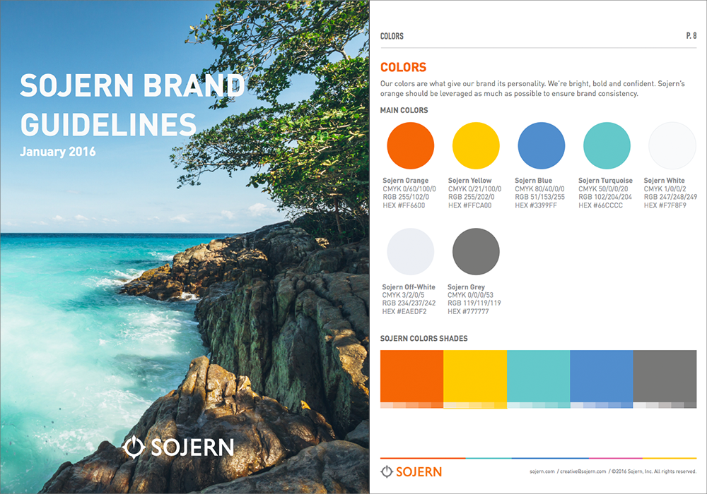
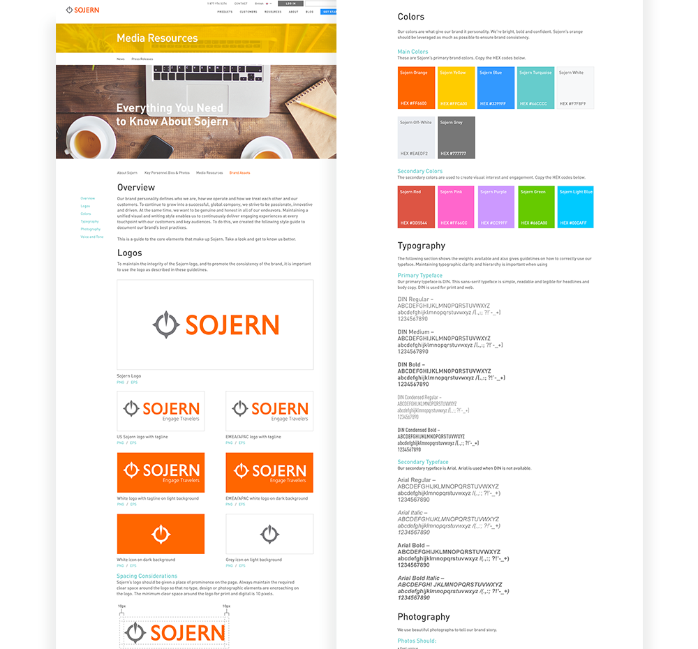
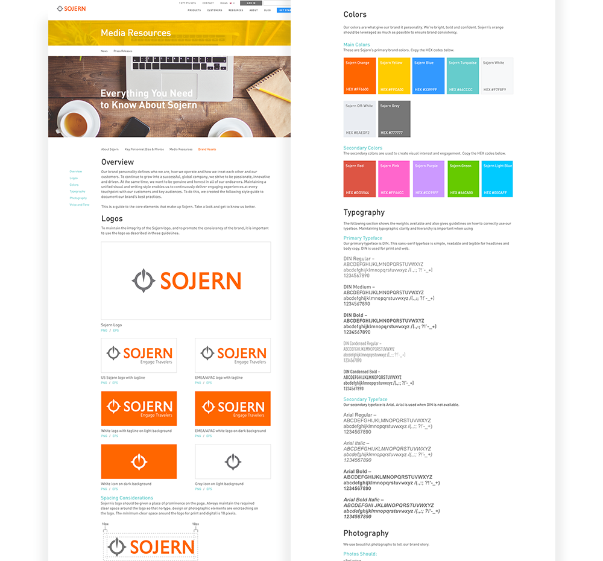
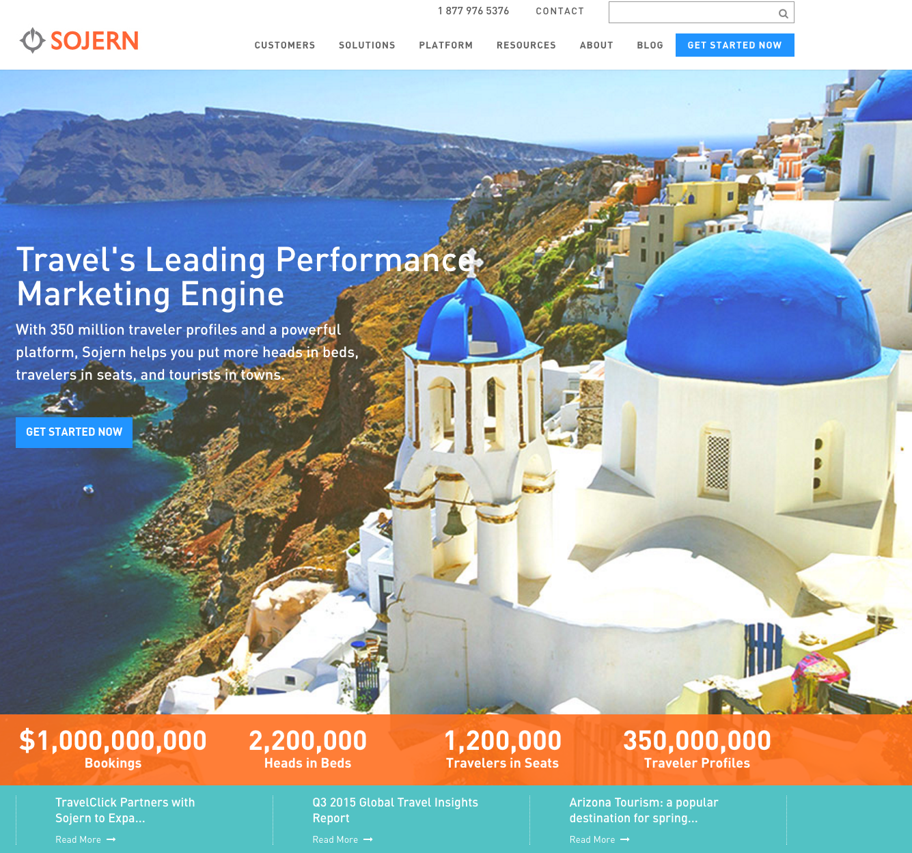

Sojern is a travel and tourism activation solution and needed a brand identity that matched their goals. In late 2015, Sojern went through an entire revamp of their marketing materials and brand identity. They wanted a visual style that represented their mission and spoke to their audiences. The result is a fresh and vibrant identity with a photograph-centric style.
We began the redesign with a planning and discovery process, which involved incorporating recommendations from various stakeholders on issues ranging from UX to content, engagement and messaging. Ultimately, our approach focused on delivering our key messages to our audiences and re-designing the brand to be engaging, vibrant and exciting.
I developed Sojern's style guide as a way to keep the brand message consistent for internal and external stakeholders. The result was a printed booklet and brand assets section on the website. We developed the visual and written style guide based on Sojern's positioning as passionate about what they do and also considerate of their customers and audiences.
Sojern uses a vibrant color palette which represents its bright and bold personality.
 

The previous website wasn't responsive, and having a mobile-first presence was extremly important to Sojern's audiences. Creating a mobile-first website, along with pairing down the content on the site helped make content easier to access and faster to scan.
